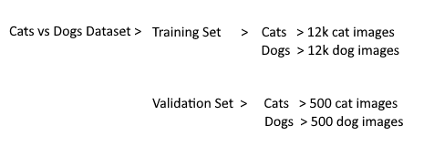

Preparing your dataset for conversion to a .tfrecords file
Making the image the correct resolution
- As mentioned before resolution of the images has to be a power of two, with identical height and width for example: 64x64,128x128,256x256.
- If your images are already in that format then you can skip this section of the guide
- However in my cats and dogs example all of the images are not square
- We must identify what power of 2 the images resoltions are all lower than, in my case all of the images are less than 512x512 in size so this will be my target resolution
- We will be using python along with the PIL module to resize and pad them. Python can be found here and a guide for installing PIL can be found Here
- The code that i will provide will use PIL to convert your images like so:

Code can be found below
from PIL import Image
import time
import os, sys
path = "PATH_HERE" #Input the path here of your folder of images, if there are any other files in the folder the program could stop working
dirs = os.listdir( path )
count = 0
desired_size = 512 #Please edit this to be your desired resolution
def resize():
for item in dirs:
filename=path+item
if os.path.isfile(path+item):
#Check if it is already resized before doing anything
if (item[len(item)-5]!='r'):
im = Image.open(filename)
#Get size of image
old_size = im.size
ratio = float(desired_size)/max(old_size)
new_size = tuple([int(x*ratio) for x in old_size])
#this part ensures the image is rgb as an error would be thrown if it isnt
if im.mode != 'RGB':
im = im.convert('RGB')
f, e = os.path.splitext(filename)
#Resizing
im = im.resize(new_size, Image.ANTIALIAS)
#Making a blank white image
new_im = Image.new("RGB", (desired_size, desired_size))
#Putting the original image on the desired size white image
new_im.paste(im, ((desired_size-new_size[0])//2,
(desired_size-new_size[1])//2))
print(item)
#Save resized file
new_im.save(f +'r.jpg', 'jpeg', quality=90)
# ^^^^this bit is the file name, im just doing the original name with r after it for resized
#Delete original once done
remove_file(filename)
#This function reattempts the delete until the file is available for deleting, stops a random error
def remove_file(path, retries=3, sleep=0.1):
for i in range(retries):
try:
os.remove(path)
except WindowsError:
time.sleep(sleep)
else:
break
resize()
Here is a link to the code on pastebin
Note that some of the comments get cut off but they are copyable and will show up once pasted into python
Simply copy and paste this code into the ide, choose your parameters and run the program. It will take some time to convert all of the images.
Preparing the labels of your dataset
While there are multiple methods for labelling your images, for the purposes of this tutorial i'm going to focus on the use of subfolders as labels.
For example i have my dataset split into catsvsdogs/cats which has 12.5k images of cats and then catsvsddogs/dogs which contains 12.5k images of dogs. For more information on this please check out the link here.
Training sets vs Validation sets
Link to wiki page explaining the differencesTraining Sets
- A training dataset is a dataset of examples used during the learning process
- Unfortunately when we train the network on this data it tends to overfit the data in which it identifies and exploits apparent relationships in the training data that do not hold in general
- For example in my the dogs and cats dataset, the dog images could in general have more black padding due to them generally being lower resolution. However this correlation is just a coincidence and would not actually help to identify a dog
- So we've identified the problem, how do we fix it?
Validation Sets
- We use a validation set to tune the hyperparameters (a parameter whose value is used to control the learning process)
- By doing this we can avoid overfitting and therefore make the network more accurate
- So how do we implement this practically?
Splitting the data
- For now what we need to do is split our dataset into a training and a validation set
- Information on how the split should be proportioned can be found here
- I personally have 12.5k dogs and 12.5k cats. So in my scenario i am going to take 500 images from each for the validation set
Your current file structure should look something like this:
Proceed to the next page on how to convert to .tfrecords by clicking here